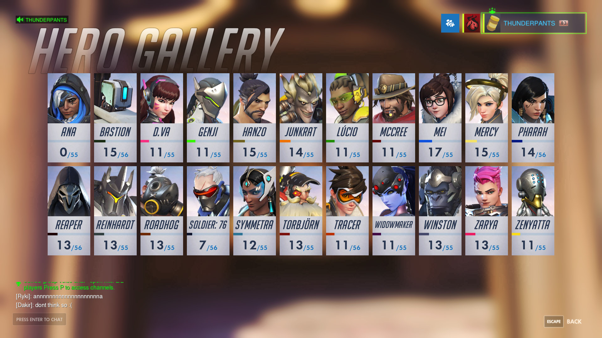

Game hub
the smallest game review website in the world
Overwatch
Scrap Mechanic
Unturned
Battleblock Theatre
Five nighs at freddys
Tereria
Dont starve
Minecraft
Ovewatch

Overwatch is a team-based multiplayer first-person shooter video game developed and published by Blizzard Entertainment. It was released in May 2016 for Microsoft Windows, PlayStation 4, and Xbox One and is available in disk and online purchase.
Welcome to Overwatch.
Soldiers. Scientists. Adventurers. Oddities.
In a time of global crisis, an international task force of heroes banded together to restore peace to a war-torn world: OVERWATCH. It ended the crisis and helped to maintain peace in the decades that followed, inspiring an era of exploration, innovation, and discovery. But after many years, Overwatch's influence waned, and it was eventually disbanded.
Overwatch is gone? but the world still needs heroes.
Choose A Hero
Overwatch features a wide array of unique heroes, ranging from a time-jumping adventurer, to an armored, rocket-hammer-wielding warrior, to a transcendent robot monk. Every hero plays differently, and mastering their abilities is the key to unlocking their potential. No two heroes are the same.
Play Your Role
Whether you're engaging in combat on the front line, providing defensive cover with your energy shield, or supporting your allies by amplifying their damage, every hero's abilities are designed to be effective as part of a team. Learning to utilize your abilities in concert with your teammates' is the key to victory.
Team-Based Objectives
Teams of heroes do battle across the planet. From protecting the secrets of the mysterious Temple of Anubis, to safely escorting an EMP device through King's Row, the world is your battlefield.